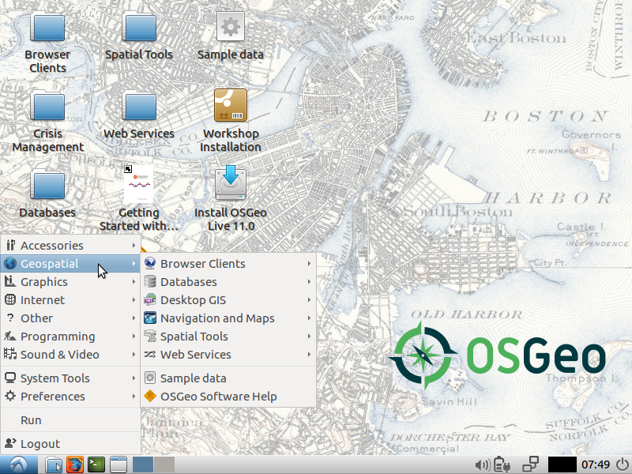

OSGeoLive 11.0.0 में आपका स्वागत है।-देव¶
OSGeoLive एक आत्मनिहित बूट करने योग्य डीवीडी, यूएसबी है अंगूठे ड्राइव या आभासी मशीन पर आधारितLubuntu, जो कि आप को खोलने की एक विस्तृत विविधता का प्रयास करने की अनुमति देता है कुछ भी स्थापित किए बिना स्रोत भू-स्थानिक सॉफ्टवेयर यह बना है पूरी तरह से मुक्त सॉफ्टवेयर की अनुमति, इसे स्वतंत्र रूप से वितरित करने की अनुमति, डुप्लिकेट और चारों ओर पारित कर दिया |
{kind=link}
यह भू-स्थानिक उपयोग के मामलों की एक श्रेणी के लिए पूर्व-कॉन्फ़िगर किए गए अनुप्रयोग प्रदान करता है, डेटा के संग्रहण, प्रकाशन, देखने, विश्लेषण और हेरफेर सहित यह इसमें नमूना डेटासेट और दस्तावेज़ीकरण भी शामिल है।
एप्लिकेशन को आज़माने के लिए, बस:
- कंप्यूटर या वर्चुअल मशीन में डीवीडी या यूएसबी थंब ड्राइव डालें
- रिबूट कंप्यूटर (यदि आवश्यक हो तो बूट डिवाइस ऑर्डर सत्यापित करें)
- स्टार्टअप के लिए "एंटर" दबाएं & लॉग इन करें।
- "भू-स्थानिक" मेनू से एप्लिकेशन चुनें और चलाएं
OSGeoLive एक OSGeo Foundation परियोजना। ओएसजीओ फाउंडेशन, भौगोलिक ओपन सोर्स सॉफ़्टवेयर विकास, पदोन्नति और सहायता के लिए लाभकारी नहीं हैशिक्षा.